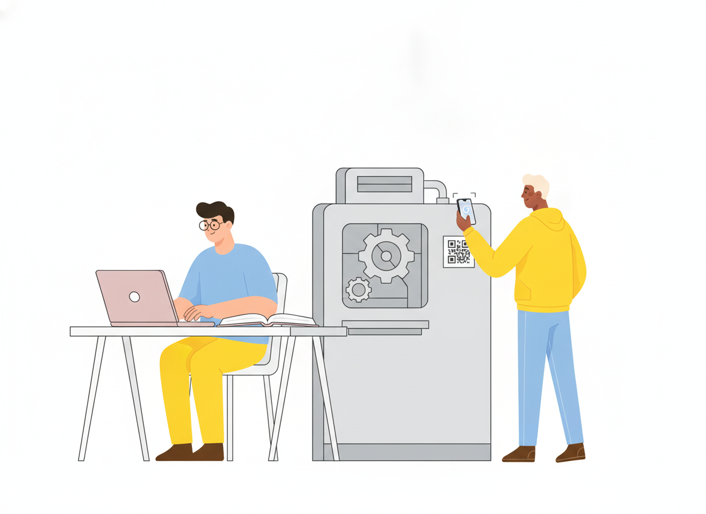
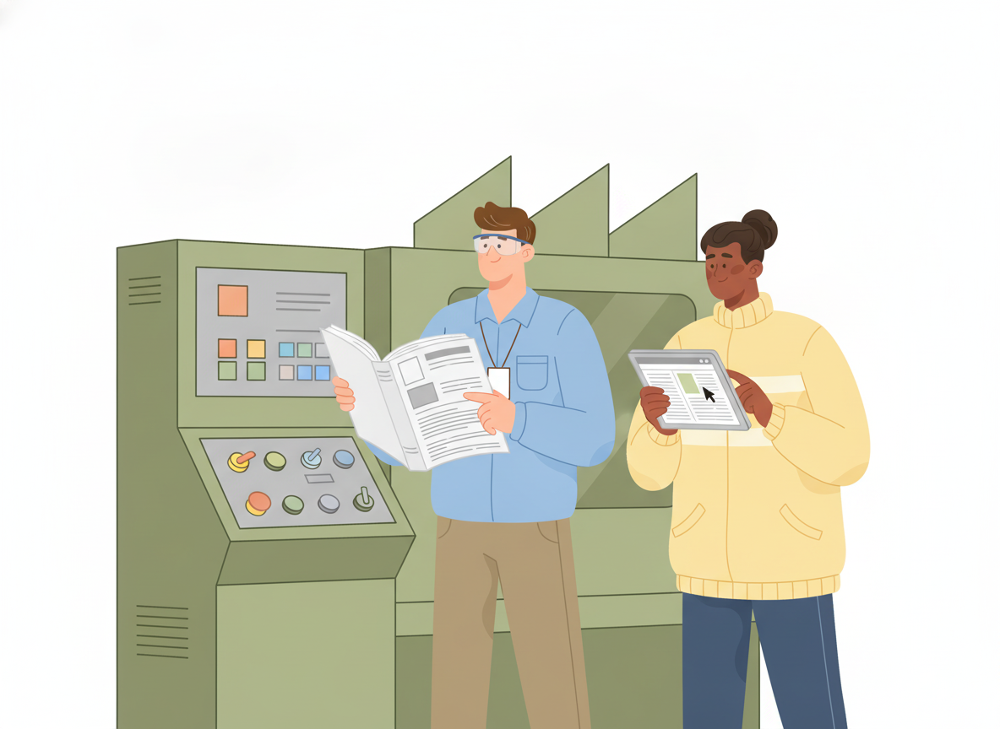

Digital Manuals and the EU Machinery Regulation: What Changes in 2027

If you make machinery for the EU market, the printed binder in the box is no longer the only legal option. From 20 January 2027, the EU Machinery Regulation lets you ship a digital manual in its place, as long as you meet a short list of conditions.
Those conditions matter. Get them right and you save printing costs, publish updates faster, and give operators a manual they can search on the shop floor. Get them wrong and the "paperless" plan turns into a compliance gap.
This guide covers what the regulation requires, what must stay on paper, and how to set up a digital user manual that stays compliant for the long haul.
What is a digital manual?
A digital manual is a product's instructions for use delivered electronically instead of in print: a web page, a downloadable file, or instructions built into the machine's own software. The content is the same as a printed manual. Only the delivery changes.
For documentation teams, the real shift is ownership. A printed manual is frozen the day it goes to press. A digital manual is a living document you publish, maintain, and keep online.
What the EU Machinery Regulation changes in January 2027
Regulation (EU) 2023/1230 replaces the Machinery Directive 2006/42/EC as the rulebook for machinery sold in the EU. According to the European Commission, it applies on a mandatory basis from 20 January 2027. Machinery placed on the EU market before that date must comply with the current directive.
The headline change for documentation is simple: the Commission confirms that instructions for use and the EU declaration of conformity can now be provided in a digital format.
Because it is a regulation rather than a directive, the same text applies directly in every Member State. That gives manufacturers one set of rules to design their documentation around.
The four conditions for digital instructions
Article 10(7) of the regulation allows instructions for use in digital format. When you take that option, the manufacturer must do four things.
1. Tell users where to find the instructions
You must mark how to access the digital instructions on the machinery itself. If that isn't possible, put it on the packaging or in an accompanying document.
In practice, this is where the QR code manual comes in. A QR code or a short web address on the machine's rating plate sends the operator straight to the right manual. The regulation also requires the instructions to clearly describe the product model they belong to, so link each code to its own model, not to a generic product-family page.
2. Make them printable, downloadable, and saveable
Users must be able to print and download the instructions and save them on an electronic device, so they can access them at all times. The text names one situation in particular: during a breakdown.
This rule still applies when the instructions are built into the machine's software. A manual that only lives inside a touchscreen menu won't do if the screen is the thing that failed. Users need a copy they can keep somewhere else.
3. Keep them online for at least 10 years
The instructions must stay accessible online for the expected lifetime of the machinery and for at least 10 years after it was placed on the market.
That is a long time on the web. Domains change. Websites get redesigned. Teams switch tools. A link printed on a machine in 2027 needs to work in 2037 and beyond.
4. Provide paper on request
If a user asks at the time of purchase, the manufacturer must provide the instructions in paper format, free of charge, within one month. Going digital doesn't mean you can drop print entirely. You need a way to produce a clean printed copy quickly.

What still has to be on paper
Two parts of the rules keep paper in the picture:
- Paper on request. As above, any user can ask for a printed copy at the time of purchase.
- Safety information for non-professional users. If the machinery is meant for non-professional users, or could reasonably end up being used by them, the essential safety information for putting it into service and using it safely must come in paper format.
So for consumer-facing or "prosumer" equipment, plan for a short printed safety sheet in the box plus the full digital manual online.
Language and clarity requirements
Digital or printed, the content rules are the same. The instructions and safety information must be in a language users can easily understand, as determined by each Member State, and they must be clear, understandable, and legible.
Annex III of the regulation adds more detail. Instructions must cover reasonably foreseeable misuse, not only intended use. When operators are non-professionals, the wording and layout must match the general education level you can reasonably expect from them. The annex also lists the minimum content: from the manufacturer's name and address to installation, operation, and what to do in case of an accident or breakdown.
There is one narrow exception. Maintenance instructions meant for specialized personnel mandated by the manufacturer may be supplied in only one official EU language that those personnel understand.
If you want a broader framework for writing instructions in general, the international standard IEC/IEEE 82079-1 sets out general principles and detailed requirements for designing and formulating all types of instructions for use.
How to set up a compliant digital user manual
Here is a practical checklist for documentation and product teams preparing for January 2027.
Give every model its own address
Create one manual, or one clearly labeled version, per product model. Then point each machine's QR code or web address at that exact version. If several models share most of their content, keep the shared parts in one place and maintain the differences as separate variants, so you don't copy-paste the same safety text across ten manuals.
Use a web address you control
The 10-year rule is the one most likely to catch teams out. Publish your online user manual on a domain your company owns, such as docs.yourcompany.com, rather than on a third-party URL you can't keep stable. If you change tools later, the address on the machine still works.
Make printing and saving easy
Check that every manual page prints cleanly and that users can save a copy for offline use. Test it the way an operator would: on a phone, on a laptop with no network, and on paper.
Keep a version history
Instructions change after launch. Firmware updates, new accessories, and safety notices all trigger edits. Keep an archive of past versions so you can show what the manual said at any point. This also helps when a machine sold years ago is still in service.
Plan your languages early
Your digital instructions need to be in languages users in each market can easily understand. Machine translation can give you a fast first draft, but have a fluent reviewer check safety-critical text before you publish it.
Make it readable on the shop floor
A digital manual earns its keep when someone can find the answer in under a minute, standing next to a stopped machine. Use clear headings, numbered steps, short sentences, and search. Write for the operator holding the phone, not for the engineer who designed the part.
Where Sonat fits
Sonat is an online manual creator built for teams who write product documentation without a developer on call. You draft in Google Docs or Sonat's editor and publish to the web in one click.
Several features map directly onto the checklist above:
- Custom domains, so your manual lives at an address you control.
- Variants, so you can keep parallel versions of the same manual for different models or editions.
- An unlimited version archive, so you can restore and review older versions.
- A mobile-responsive viewer and full-text search, so operators can find answers on the device in their hand.
- Machine translation into 184 languages, as a starting point for your language versions.
Sonat doesn't make a manual compliant on its own. That still depends on what you write and how you publish it. But it removes a lot of the friction from keeping a digital manual current, findable, and online for years.
Start before the deadline
The EU Machinery Regulation turns the digital manual from a nice idea into a legal option with clear rules. Mark how to access the instructions, make them printable and saveable, keep them online for at least 10 years, and be ready to print on request.
Teams that start now can move one product line first, test the QR-to-manual flow with real operators, and go into January 2027 with a process that works. You can start with Sonat's free plan and publish your first digital user manual today.
This article explains the regulation in general terms and is not legal advice. Check the official text and your conformity assessment requirements for your specific machinery.